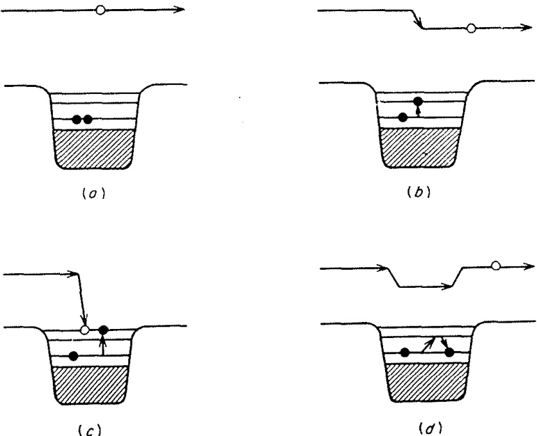
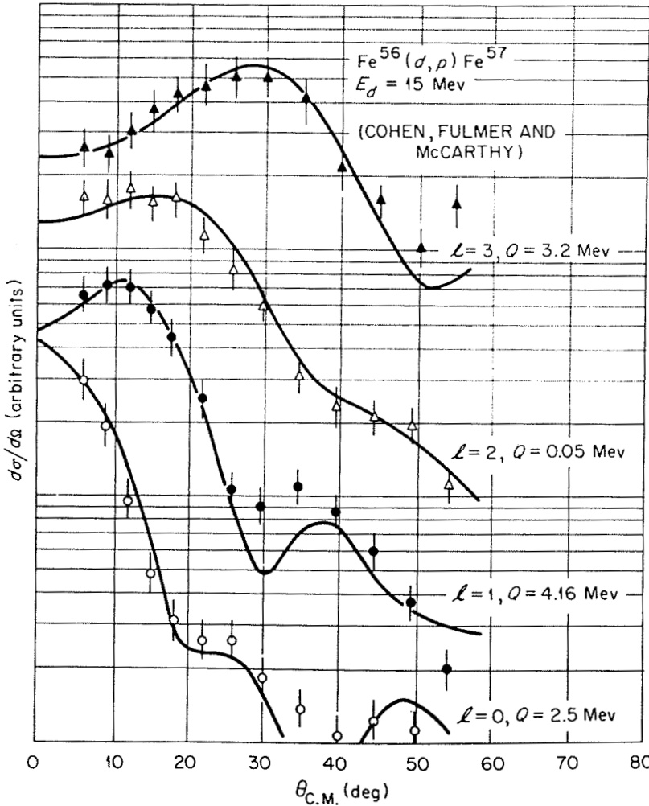
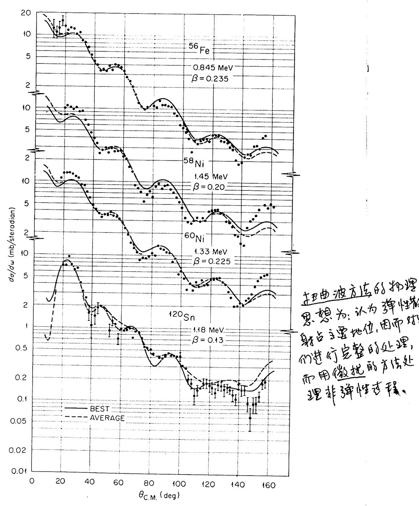

Introduction
1.1. 引言 (Introduction)
直接核反应研究概述
直接核反应（direct nuclear reactions）的研究可以追溯到早期的一些关键实验和理论发展。例如，Burrows、Gibson 和 Rotblat（1950），以及 Holt 和 Young（1950）发现，由 MeV 氘核诱发的反应产物具有前倾的角分布，并且这些分布需要用高阶勒让德多项式（Legendre polynomials）来描述。为了解释这些实验现象，Butler（1950, 1951）、Huby（1950）、Huby 和 Newns（1951），以及 Bhatia 等人（1952）提出了相关理论。
在这些研究之前，至少有两个重要的先驱性工作值得一提：奥本海默和菲利普斯（Oppenheimer and Phillips 1935）研究了极低能量下的 (,) 反应。他们发现，这一反应是通过氘核中的中子直接转移到靶核而发生的，而不是通过形成复合核（compound nucleus）。这种机制在低能量下优势更明显，因为质子无需克服库仑势垒（Coulomb barrier）。此外，塞尔伯（Serber 1947）提出了一种剥裂机制（stripping mechanism），用于解释由高能（约 MeV）氘核诱发的 (,) 和 (,) 反应。这些早期的工作为后续直接核反应的研究奠定了重要基础。
大约在同一时期，光学模型（optical model）在弹性散射（elastic scattering）研究中焕发了活力。这一模型最初被应用于高能质子散射的研究（Fernbach, Serber, and Taylor 1949），随后扩展到低能（ MeV）质子散射（LeLevier and Saxon 1952），最终用于描述极低能量（≲1 MeV）中子截面的平均行为（Adair 1954; Feshbach, Porter, and Weisskopf 1954）。【光学模型的发展过程由 Feshbach (1959) 进行了综述。】
对核力强而短程性质的认识，促成了复合核概念的提出（Bohr 1936; Breit and Wigner 1936）。根据这一概念，输入的能量基本上会在所有组成核子之间随机分布。我们至今仍然认为，在许多情况下，这种机制能够很好地解释反应截面的主要部分。然而，这一理论框架中缺少了一个关键要素：尽管原子核具有相对明确的表面，但在表面附近存在一个过渡区域。在这一区域内，入射粒子与靶核之间的相互作用从无到有、逐渐增强，并且这一过程对反应的动力学特性有着重要影响，尤其是在描述反应机制时需要被充分考虑。
在这一表面区域，入射粒子可能与靶核中的某个核子（或某种简单的核运动简正模式，如形状振荡）发生非弹性相互作用（inelastic interaction），并且剩余粒子逃逸的概率相当可观。这类反应被称为直接反应（direct reactions），因为它们直接连接初态和末态，而不形成中间的复合系统。只有当入射粒子进一步深入穿透靶核并经历多次后续碰撞时，才会形成复合核。此外，还可以设想一些介于两者之间的中间情况，例如碰撞仅经过几次相互作用便终止。这些多步过程（multistep processes）在多大程度上也被归类为“直接反应”，在一定程度上取决于个人的偏好和具体定义。
将直接反应严格局限于表面区域的图景过于简化。一个显著的例外是相对低能核子的弹性散射。在这些情况下，入射核子会发现原子核是部分透明的，即它们有一定的概率直接穿过靶核而“不被吸收”，即不形成复合核或发生非弹性碰撞。这一现象极大地推动了光学模型的发展。该模型通过一个简单的、具有弱吸收特性的势阱来描述平均核子-核相互作用。这种情形实际上可以看作是束缚态中单粒子特征的散射类比，而后者由核壳模型（nuclear shell model）描述。然而，大多数非弹性的直接反应确实主要局限在表面区域（或者更准确地说，是在量子力学允许的最大范围内）。
直接反应通常被描述为发生在表面区域的过程，这一事实表明，它们可以被视为通向复合核形成的“通道”（doorways）。复合核的形成通常经历一系列逐步复杂的激发过程；其中的第一步对应于一个较为简单的机制。如果在这个阶段入射粒子逃逸，就会导致可观测的直接反应。Feshbach、Kerman 和 Koonin (1980) 提出了一个体现这些思想的现代理论框架。
上述描述的物理图景暗示，直接反应的发生非常迅速。这类反应通常在入射粒子穿过靶核所需的渡越时间（transit time）量级内完成，这与靶核中的核子完成一次轨道运动所需的时间相当。相比之下，若要形成复合核，系统必须保持在一起的时间远远超过这个渡越时间。此外，直接反应的一个重要特性是，当轰击能量在几兆电子伏特（MeV）量级范围内变化时，反应截面只会缓慢变化。与此相反，如果反应截面随能量快速变化（如共振或涨落截面），则表明反应时间远长于渡越时间，这意味着形成了一个寿命较长的中间态系统。
前述的直接反应图景也引导我们认识到它们作为核结构信息来源的重要性。由于直接反应本质上是一个单步过程，其反应振幅主要取决于初态和末态的重叠，而不涉及复合核的复杂中间构型。因此，直接反应截面能够直接反映两个核态之间的关系。例如，在 (,) 剥裂反应中，当中子被转移到靶核时，我们可以通过这种反应了解剩余核态在多大程度上类似于靶核的基态加上一个在单粒子或壳模型轨道中运动的中子。这种相似性的度量被称为谱因子（spectroscopic factor），它表征了这种概率。显然，这类信息对于检验核壳模型的预测至关重要。类似的观点也适用于其他类型的反应：如果两个核态仅在单一基本模式（无论是单粒子型还是集体型）的激发上存在显著差异（或具有重要差异成分），它们将通过适当的直接反应紧密关联。
相比之下，真正的复合核反应无法提供上述信息。复合核本质上“遗忘”了它的形成方式，除了角动量和宇称守恒的影响外，其形成和衰变是独立的过程，初态和末态之间没有直接的重叠参与其中。此外，这两种类型的反应在运动学特征上也存在显著差异。直接的、单步的反应通常只转移相对少量的能量，并倾向于布居剩余核的基态和低激发态。而复合核则更倾向于通过蒸发低能量粒子（特别是中子）来形成剩余核的较高激发态。我们通常对低能态更感兴趣，因为这些态是核结构模型最可能可靠描述的部分；而这些恰恰是直接反应能够为我们提供丰富信息的区域，但却是复合核衰变最不可能发生的区域。因此，尽管直接反应通常只占总反应截面的一小部分，但它们作为谱学工具（spectroscopic tool）的重要性却远超其比例。
此外，直接反应在形成末态方面表现出更强的选择性。复合核的衰变道在很大程度上与其形成方式无关，仅受角动量和能量的限制。相反，直接反应则以一种对其特性高度敏感的方式形成特定通道：非弹性散射强烈激发集体态（collective states）；单核子转移优先形成“单粒子”态；双核子转移则优先进入表现出强配对关联（pairing correlations）的态，等等。这种选择性使得直接反应在探测核结构的不同方面时显得尤为宝贵，为研究核内复杂的动力学和相互作用提供了独特的视角。
1.2. 直接反应的定义 (The definition of direct reactions)
1.2.1 简洁性 (Simplicity)
如何定义直接反应的问题并没有一个明确的答案。Austern（1970）对此进行了全面的回顾与探讨。然而，从定性角度来看，其核心概念是明确的：当入射通道与出射通道的波函数之间存在明显的重叠时，碰撞往往仅涉及少量核子的重新排列；这一过程通常迅速完成，并被称为直接反应（direct reaction）。这种情况通常被认为只涉及少数自由度（degrees of freedom），但这一表述需要谨慎使用。它依赖于所采用的表象，如果用集体模型描述，集体振动（collective vibration）可以非常简单，甚至可能仅涉及一个坐标；而若用壳模型（shell model）描述，则可能涉及许多独立粒子激发的关联叠加。因此，初态与末态波函数之间良好重叠的概念意味着，在适当的表象下，只需要很少的自由度。
最典型的直接相互作用情形是弹性散射（elastic scattering），在这种情况下，初始和最终的波函数相同（除了自旋取向可能发生改变）。弹性散射的直接分量，也称为形状弹性（shape-elastic）分量，通常占主导地位，并引出了光学模型（optical model）的概念。光学模型与束缚态的壳模型之间存在密切的类比关系。在壳模型中，通过引入粒子间的剩余相互作用（residual interactions）来修正计算结果；有时采用微扰理论（perturbation theory），有时则在有限基组内进行对角化。类似地，剩余相互作用也被用来修正光学模型，这些修正包括非弹性散射（inelastic scattering）和重排碰撞（rearrangement collisions）。这两种计算方法同样被广泛使用。此外，束缚态理论和散射态理论还有一个共同特征，即它们都以原子核及其相关的光学模型和壳模型势的形式包含集体运动（collective motions）。
1.2.2 一个示例模型 (An Illustrative Model)
为了教学目的，我们考虑一个简单的示例模型，用以展示反应过程中各步骤的物理特性。使用壳模型语言（即独立粒子态）进行讨论最为直观，但其他描述核激发的简单方法（如集体振动）也同样适用。
在壳模型中，核子间的平均相互作用由单体势 表示，而围绕该平均值的涨落则由两体“剩余相互作用 (residual interactions)” 描述。（这里我们不关注这些相互作用与实际核子-核子相互作用之间的关系，也不涉及 和 的精确定义。）在这个模型中，入射核子具有正能量，并受到相同的相互作用作用：
最简单的过程是入射核子被平均势散射，而靶核中的核子不受干扰，如图 1.1(a) 所示。在这种情况下，光学势 (optical potential) 可以近似等同于（实）壳模型势 (shell-model potential)，即 。接下来考虑 的一次作用：靶核中的某个核子可能被激发，导致入射核子的能量降低，如图 1.1(b) 所示。这是非弹性散射的一个简单例子，末态与初态的波函数有良好的重叠。这种过程仅在一个核子的状态上发生变化，并且可以通过 的单次作用实现。显然，这应被视为一种直接反应。

图 1.1. 核子撞击原子核时可能发生的一些过程的示意图。阴影区域代表填充的壳层；实心点代表两个价核子。
入射核子实际上可能被俘获（如图 1.1(c) 所示），从而形成一种亚稳态——即所谓的“连续谱中的束缚态”（bound state embedded in the continuum，Mahaux 和 Weidenmüller, 1969）。当能量条件恰到好处时，这种过程会导致共振截面（resonant cross section）的出现。
值得注意的是，如果图 1.1(b) 中入射核子的能量使其最终处于 势阱中的一个尖锐单粒子散射共振（single-particle scattering resonance），它同样会表现出共振行为。不过，这种情况通常仅在能量非常低时发生。
这些亚稳中间态具有复合系统的双粒子单空穴（two-particle, one-hole）激发特征。近年来，将它们称为“通道态”（doorway states）已成为一种趋势。这些态是通向任何更复杂激发的第一步，也可以被视为从简单到复杂激发的桥梁。
显然，这一过程可以继续发展。如果 再次作用，另一个靶核子可能被激发，依此类推。然而，在深入探讨之前，我们先考虑其他可能性。最简单的情形是， 的第二次作用恰好逆转了图 1.1(b) 中的过程，从而导致图 1.1(d) 所示的情况。这种情况对应于弹性散射。
如果我们希望在光学模型中包含这类贡献，则必须向 添加一项： 这个贡献 具有两个重要特性：非局域性（nonlocal）和能量依赖性（energy dependent）。所谓非局域性，是指核子在位置 处离开入射通道后，可能在另一位置 返回；而能量依赖性则体现在两次碰撞之间核子的传播行为会随能量变化。是否能够或有必要将 纳入模型，取决于其具体性质。我们通常倾向于用简单的模型势来描述 ，并希望其最多仅具有平滑的能量依赖性。然而，如果像图 1.1(d) 中那样的高阶贡献包含共振行为，则可能难以满足这一要求。
通常情况下，存在许多类似于图 1.1(d) 的跃迁过程。如果这些跃迁的数量足够多，使得它们的总体效应随能量平滑变化，那么我们可以通过扩展 来包含这些贡献。然而，在轻核体系中，特别是在较低能量下，可用的构型数量较为有限。因此，我们观察到的至少部分共振现象具有“通道态”的特性。在这种情况下，唯一令人满意的方法是明确求解由 耦合的弹性散射和束缚态方程（基于 ）。相关研究可参考文献（例如，Feshbach, Kerman, and Lemmer, 1967；Mahaux and Weidenmüller, 1969）。
顺便提一句，这种情况凸显了过于简单化定义“直接反应”和“复合核反应”所带来的风险。在这里，我们可能会观察到相当尖锐的共振现象，这些共振与整个系统或“复合核”的亚稳态相关。然而，由于这些态的特性相对简单（仅出现在 的二阶效应中），它们也可以被视为直接反应的一部分。
当图 1.1(d) 中的中间态不衰变回弹性通道，而是衰变到非弹性通道或更复杂的激发时，就会导致入射通道通量的损失。这种吸收效应（absorption）可以通过在 中引入虚部来描述。之前的讨论同样适用于这一情况：如果存在多种可能的衰变模式，吸收行为通常会随能量平滑变化；但如果可能的衰变模式较少，则可能出现共振行为，此时需要对 进行更细致的分析和处理。
1.2.3 ‘直接’与‘复合’ ('Direct' versus 'compound')
类似于之前讨论的情况，类似的分析方法也可以应用于非弹性跃迁。像图 1.1(b) 所示的事件显然是直接反应，而那些 作用两次（如图 1.1(d)）或仅作用少数几次的事件，由于其过程相对简单，可以归类为“直接 (direct)”反应，或者至少是“半直接 (semidirect)”反应。这些过程既可以通过微扰理论进行计算，也可以通过求解相关的耦合方程（coupled equations）来处理。
那么，界限在哪里？一个过程需要变得多复杂才不再适合被称为“直接”？关键问题与其说是相互作用作用了多少次，不如说是涉及了多少自由度或简正运动模式。例如，我们可以求解一对耦合方程，用于描述从靶核基态到一个声子态（one-phonon state）的散射；尽管相互作用被考虑到了所有阶，但只涉及一种（振动）核运动模式。这种情况显然值得被称为“直接”反应。
即使在理论模型中明确考虑了通道之间的复杂耦合（即多个通道之间存在直接关联），这种情况通常也仅限于那些彼此具有简单结构关系的原子核之间的通道。换句话说，只有当涉及的原子核在结构上相对简单（例如，质量数相近或激发模式类似）时，这种耦合效应才容易被描述和处理。
然而，随着入射能量逐渐扩散到更复杂的运动模式（例如更多的内禀激发或更复杂的核子重组），系统的动态行为会变得更加复杂。此时，我们才真正进入了描述聚变和复合核形成的路径。在这种情况下，反应不再局限于简单的通道耦合，而是涉及到整个核系统的全局变化。
在我们一直讨论的直接反应中，通量确实会通过吸收性光学势（absorptive optical potentials）和有效相互作用（effective interactions）的虚部不断流失。这种流失反映了通量从直接反应通道向更复杂状态的转移。最初的“门道”是弹性散射，其中形状弹性（shape-elastic）部分构成了直接分量。在此阶段，被吸收的部分通量会迅速重新出现在其他直接反应通道中，但其中一部分因耦合到更复杂的激发而逐渐流失。
上述图景还有一个重要后果。那些通过许多复杂中间态但最终回到入射（弹性）通道或低激发通道之一的高阶贡献，平均而言，很可能与主要的直接或低阶贡献是非相干的（incoherent）。如果可能的中间态数量足够多，这些多步项倾向于具有随机相位，因此干涉效应平均而言会趋于抵消。这些项可以用统计方法处理（例如，参见 Vogt, 1968）。由此，我们得出结论：总截面可以视为直接反应截面与“复合核”截面的非相干叠加。除非在低能量下，若跃迁在一阶或低阶是允许的，则由于复合系统衰变开放的许多其他通道的竞争，复合贡献预计会很小甚至可以忽略不计。
当然，“直接反应”和“复合核反应”之间从来没有明确的界限，试图划定这样的界限是徒劳的。这两种标签是为了强调核碰撞过程中不同方面而发明的理论产物。在实践中，两者之间存在灰色区域。近年来关于预平衡（preequilibrium）或预复合反应（precompound reactions）的研究（例如，Feshbach, Kerman, and Koonin, 1980 的综述）正是针对这些问题展开的。
对极重离子之间反应的研究进一步强调了这一点，并揭示了一种新型反应：深度非弹性散射（deep-inelastic scattering）（近期综述可参见 Bass, 1980）。这种反应涉及大量相对运动动能转化为内禀激发能，末态数目众多（在微观层面）。尽管如此，反应相对较快，角分布在掠射碰撞（grazing collisions）角度附近可能会急剧峰化，并且两个初始核在某种程度上保持其特性，仅有少量核子在它们之间转移。因此，它具有一些“直接”反应的特征。
1.2.4 能量平均与“直接”的定义 (Energy-averaging and the definition of 'direct')
典型的核碰撞是一个复杂且强相互作用的多体过程，可能涉及大量的自由度。为了更好地理解这一点，我们可以回顾第 1.2.2 节中的示例模型：在这一模型中，靶核可能发生许多不同形式的激发，而剩余相互作用 可能在不同阶次上起作用。例如，一次简单的激发可能只涉及一个核子的状态变化（如单粒子激发），但随着能量增加，可能会出现多个核子的重新排列或更复杂的集体振动模式。这种复杂性使得任何特定的跃迁振幅 都可以被视为由大量项组成，其中大多数项随轰击能量快速变化。
我们之前提到过，直接反应的特点是其简单性，即它仅涉及少数自由度。然而，如何将这一特点与实际核碰撞的复杂性联系起来？一种常见的方法是引入对某个能量区间的平均处理。
在研究低能中子截面时，光学模型的应用通常需要进行能量平均。这是因为这些截面往往表现出许多尖锐的共振峰。即使在存在大量重叠共振的情况下，原则上仍然需要通过能量平均来描述系统的整体行为。
具体来说，跃迁振幅 可以被分解为两部分：
- 能量平均值 ：这是对某一能量区间内的平均贡献，反映了系统的主要趋势。
- 涨落部分 ：这是围绕平均值的波动，其均值为零，代表了局部的、快速变化的细节。
用公式表示为：
一些作者（例如 Mahaux 和 Weidenmüller, 1979；Feshbach 等, 1980）提出了一种定义：将 称为直接反应振幅，而将 称为复合核振幅。这种定义具有以下优点：
- 干涉项消失：由于 的均值为零，在能量平均后，直接反应和复合核反应之间的干涉项会自动消失。
- 缓慢变化的特性：直接振幅 随能量的变化较为缓慢，这与直接反应的时间尺度较短（即反应发生得较快）相一致。
然而，这种定义虽然理论上有吸引力，但在实践中却面临一些困难。Austern（1970）指出，直接将这一定义与实验中常用的方法建立一一对应关系并不容易。最接近的理论框架可以在 Feshbach 等（1980）的工作中找到。
在实际研究中，科学家们通常不会试图给“直接反应”一个严格的精确定义，而是采用更具启发性的方法。他们通过构建简单的动力学模型来探索核反应的行为。这些模型的选择通常基于以下几点：
- 波函数的约束：模型的选择涉及对总波函数的部分施加约束，而不是直接对跃迁振幅施加约束。例如，某些模型可能只考虑少量的激发态或特定的自由度。
- 有效相互作用：在这些模型中使用的相互作用是所谓的“有效相互作用”（见第 2.9 节）。这些相互作用原则上体现了系统与其他自由度的耦合效应（例如，通过虚部反映吸收效应）。
- 隐式平均：尽管这些模型中的相互作用矩阵元被假定为简单，但它们实际上代表了真实耦合的某种平均值。换句话说，模型中的相互作用已经隐含地包含了对复杂性的平均处理。
从理论上讲，通过对能量区间进行平均，可以将跃迁振幅分解为直接反应振幅 和复合核振幅 。这种定义为直接反应提供了一个形式上的框架，但也存在局限性：如何将其与实验中常用的分析方法建立明确的对应关系并不总是显而易见。
在实际研究中，科学家们更倾向于使用启发式的模型方法。这些模型通过对波函数施加约束并引入有效相互作用，能够在一定程度上捕捉到核反应的本质特征。虽然这种方法可能缺乏严格的理论基础，但它在实践中被证明是非常有效的。
1.2.5 波函数模型 (Wavefunction Models)
Austern（1970）提出了一种形式体系，并对其进行了广泛讨论。在这一理论框架中，总波函数被分解为两个部分：闭合部分和开放部分： 其中，闭合部分 在空间上局限于两个核碰撞区域周围，但在外部逐渐消失；而开放部分 则描述了远离碰撞区域的行为，包括入射和出射通量。
要给出这两部分的精确定义，通常需要指定一个特定的表象。然而，对于定性讨论来说，这种具体定义并非必要。
闭合部分 的主要特征是它在空间上局限于两个核碰撞点附近，并在远处迅速衰减。因此，闭合部分不携带任何通量。用第 1.2.2 节的示意模型（它代表了一种表象选择）来说， 包含了所有复杂的多粒子激发态，其中没有任何一个核子处于连续谱中。换句话说，这些状态对应于复合核的内部激发。
特别重要的是那些零阶能量为正且接近当前反应能量 的构型。这些构型被称为“连续谱中的束缚态”（bound-states-in-the-continuum）。它们的存在使得 能够表现出共振行为。例如，当某个多粒子激发态的能量与入射粒子的能量非常接近时，可能会出现尖锐的共振峰。
开放部分 描述了未局限于碰撞区域的部分波函数，因此它包含了远距离处的入射和出射通量。直接反应模型的核心在于：它提供了 各部分之间的直接耦合，而无需显式地涉及 。尽管如此， 在相互作用区域内的结构仍然复杂，原因有以下两点：
- 各部分之间的耦合： 的不同分量之间存在复杂的相互作用。
- 与闭合部分的耦合： 也通过间接方式与 发生耦合。
为了简化这种复杂性，在实际计算中，科学家们通常使用有效相互作用（effective interactions），通过平均的方式表示这些耦合的影响。例如，光学模型势（optical-model potentials）就是一种常见的有效相互作用形式。
此外，一个特定的模型通常只明确关注 的一小部分。由于模型空间有限，不可避免地会有一部分通量流失到未包含在模型中的其他开放通道中。这种通量损失可以通过引入虚部的吸收性相互作用（imaginary, absorptive interactions）来解释。这些吸收性相互作用以平均的方式描述了从模型空间到其他开放通道的通量流失，无论是直接发生还是通过闭合部分间接发生。
在实践中，直接反应的计算更侧重于平均的有效相互作用（如光学模型势），而不是平均的跃迁振幅。这是因为相互作用和跃迁振幅之间的关系是非线性的，很难将这种方法与上一节中描述的能量平均方法精确联系起来。然而，这两种方法背后的物理概念是非常相似的。
总的来说，在本书的后续部分中，我们将把直接反应理论视为一种启发式方法。这种方法的核心在于构建模型波函数，并通过分析其行为和后果来探索核反应的特性。在此过程中，我们不断根据实验数据的反馈对模型进行改进和优化。通过这种迭代的方式，我们可以逐步揭示核反应背后的本质规律。
1.3. 直接反应的识别 (The identification of direct reactions)
从前文的讨论中可以清楚地看出，目前尚不存在明确无误的直接反应定义。尽管如此，讨论中已经强调了一些关键特征，这些特征可以作为初步判断特定反应在特定能量下是否具有直接性的标准。
已经提到，直接反应通常随着轰击能量的变化而表现出缓慢的变化趋势。然而，在某些特殊情况下，直接反应模型可能会导致振幅随能量快速变化。这种现象可能是由于光学势中的单粒子共振引起的。但这种情况非常罕见，通常仅在非常低的能量下才会观察到。此外，与其他开放通道的耦合（即由于吸收引起的阻尼效应）往往会抑制这些共振。因此，只有当观察到的截面随能量缓慢变化，或者通过某种合适的方式去除观察到的任何波动后，直接反应描述才可能适用。
直接反应的一个显著特点是其倾向于简单、一步完成的过程。这意味着在这种反应中，通常只会转移少量动量。因此，反应产物的角分布往往呈现不对称性，并且在前向方向上形成峰值（即向前峰化）。如果反应局限于核表面（即周边碰撞），则较大的角动量参与将使得角分布的峰值更加狭窄（在散射角上更加局域化）。线动量和角动量守恒的重要性将在下一节进一步展开讨论。
观察到角分布中前向峰化的结构，且该结构对能量变化具有稳定性，是判断某一反应是否为直接反应的良好指标。需要注意的是，随着能量的提高以及可用角动量数量的增加，这种前向峰化现象会变得更加明显。
粗略来说，反应中涉及的能量转移越大，它越不可能是直接反应。为了获得整体视角，图 1.2 展示了由能量约为 100 MeV 的粒子引发的某个反应 (, ) 的产物“典型”能量谱。
- 低能粒子：主要来源于达到统计平衡的复合系统蒸发。
- 高能粒子：使系统处于离散的、低激发态，这些情况最可能是直接反应的结果。
- 过渡区域：在低能和高能之间存在一个宽广的过渡区域。在这个区域中，预平衡统计模型（Blann 1975）或多步直接过程模型（Udagawa, Tamura, and Kim 1979）已被成功应用。然而，即使在这个区域，也可能存在相对简单的激发模式，例如巨共振（Satchler 1978）。这些激发可以通过主要是一步完成的直接过程来实现。
综上所述，直接反应的特征包括能量变化缓慢、动量转移小、角分布前向峰化等。这些特性为我们提供了判断某一反应是否为直接反应的重要依据。

图 1.2. 由能量约为 100 MeV 的炮弹引发的反应 产生的激发能谱示意图。

图 1.3 展示了用 62 MeV 质子轰击 后，在不同角度发射的质子能量谱。（数据来源：Bertrand and Peele, 1973。）
为避免读者被理论家的抽象概念所误导，图 1.3 展示了用 62 MeV 质子轰击 后，在不同角度发射的质子的实测谱。从图中可以看出， 处的谱与图 1.2 所示的示意谱非常相似。
- 低能质子：其蒸发峰几乎呈现各向同性分布。
- 高能质子：则表现出强烈的前向峰化现象，这是直接反应或半直接反应的典型特征。
- 角度依赖性：随着散射角度的增加，能量最高的质子数量显著减少。
这些实验结果清楚地反映了直接反应和复合核反应的不同特性。
1.4. 使用平面波描述直接反应；动量和角动量的作用 (A description of direct reactions using plane waves; the role of momentum and angular momentum)
在1950年代初期，随着关于氘核剥裂的第一批论文发表，直接反应的概念以多种不同方式被阐述。尽管表述各异，但其物理内涵始终与玻恩近似（Born approximation, BA）所承载的本质相同。玻恩近似的优点在于其易于讨论，因此我们在此通过它来强调动量和角动量守恒在决定直接反应特征中的重要作用。
平面波理论（plane-wave theories）虽然存在严重缺陷（稍后将被摒弃），但在揭示这些守恒定律的作用方面表现得非常直观。有关这些效应的半经典讨论，可参考 Butler、Austern 和 Pearson（1968）的研究。
为了理解直接反应的基本物理图像，我们考虑一种简化的氘核剥裂反应模型，这是巴特勒理论（Butler, 1950, 1951）的进一步简化版本（Spiers and Satchler, 1952）。具体来说，我们研究 反应。
一个未受扰动的氘核平面波形式可以写为： 其中：
- 和 分别是中子和质子的位置矢量；
- 是氘核的内禀波函数（为简单起见，忽略自旋）。
通过对 进行傅里叶变换并重新整理，波函数可以改写为： 其中 是傅里叶变换： 且定义了以下量：
方程 (1.2) 揭示了有趣的物理特性：
- 如果观察到动量为 的质子，则我们知道它与一个沿 方向（称为“反冲动量”）运动的中子相关联。
- 找到动量为 的质子的概率幅正比于 ，其中 表示氘核内部运动中必须提供的额外动量（超过由于氘核整体运动而具有的量 ）。
- 剥裂的基本图像是：中子从氘核中被夺走，留下质子不受干扰。
能量守恒决定了质子动量 的大小，而动量守恒（如方程 (1.4) 所表达）则使得 和 的大小随 的方向变化。
原子核不会接受中子的平面波；它们只俘获特定的角动量分量。因此，我们需要对 (1.2) 中的中子波进行分波展开（partial-wave expansion）：
如果靶核 在角动量为 的壳模型轨道上有一个空位，则会选择该分波项。贝塞尔函数 描述了在核表面 找到合适中子的穿透振幅（penetration amplitude）。因此，俘获概率（或截面）正比于：
这种依赖性通过动量守恒（方程 (1.4)）与质子的发射方向（即 的方向）相关联。对于每个 值，这种依赖性具有不同的特征，从而赋予该反应作为谱学工具的重要性。
由于球贝塞尔函数 的振荡性质，截面的角分布呈现振荡状。此外， 的第一个也是最大的峰值随着 的增加出现在较大的 值处（对应较大的质子发射角）。这为角动量转移 提供了主要特征。
相较之下，氘核变换 随质子角度的变化较慢，因为 是通过对整个空间积分获得的，而 包含了核半径 ，反映了中子俘获发生在核表面的假设。
简单的玻恩近似提供了一个例证，说明这些特征是直接表面反应假设的一般结果，并非氘核剥裂所特有。对于由相互作用 引发的反应 ，在玻恩近似下，跃迁振幅的表达式为： 其中：
- 和 是入射粒子相对于靶核的相对动量和分离；
- 和 是出射粒子的相应量；
- 表示第 个核的内禀态。
由于核力是短程的，我们可以近似 ，得到： 其中 是动量转移。
核矩阵元可以展开为多极级数：
通常，核自旋和选择定则限制了只有少数几个 值。如果我们仅考虑一项，则跃迁振幅简化为：
假设反应局限于核表面 ，则跃迁振幅进一步简化为： 其中：
尽管简单的平面波理论为直接反应的物理起源提供了见解，但它存在基本不一致性：核内部 被排除在外，理由是强吸收区域对应于复合核形成，而外部仍使用平面波形式。然而，平面波无法简单地“打洞”而不引入反射。
因此，平面波很快被扭曲波（distorted waves）取代，后者包含了折射和吸收效应。例如：
- 巴特勒边界匹配方法的扩展（Friedman and Tobocman, 1953）；
- 玻恩近似到扭曲波玻恩近似（DWBA）的推广（Horowitz and Messiah, 1953）。
这些改进不仅解决了平面波理论的局限性，还为更精确地描述直接反应提供了理论基础。
1.5. 扭曲波理论 (Distorted-wave theories)
扭曲波理论（Distorted-wave theories）的核心假设是：弹性散射是两个原子核碰撞时发生的最重要的单一事件。这里的弹性散射不仅包括传统的弹性过程，还涵盖了吸收的概念。所谓吸收，是指通量被移除到许多其他反应通道中。这些通道单独来看可能并不重要，但总体上可能导致入射通量在核内部完全消失（即强吸收现象）。为了描述这种复杂的耦合效应，可以通过引入复光学势（complex optical potential）以平均化的方式表示这些众多的耦合。
这一方法隐含了两个关键假设：
- 与单个反应通道的耦合较弱；
- 这些通道之间没有强烈的关联。
第二个假设的破坏可能是近年来在重离子诱发转移反应中遇到一些困难的原因。
基于上述物理假设，我们首先尝试精确地描述弹性散射（在简单光学模型的框架内），然后将其他反应视为微扰，或看作弹性散射态之间的跃迁。
在扭曲波玻恩近似（DWBA）中，跃迁振幅从玻恩近似的形式（方程 (1.7)）推广为以下形式： 其中：
- 是扭曲波（distorted waves），用于描述相应的弹性散射；
- 其形式为： 其中 是散射波部分。
扭曲波通常通过使用光学势生成，这些光学势的参数经过调整以拟合在适当能量下观察到的弹性散射数据。
与平面波情况不同，两个扭曲波无法像方程 (1.8) 那样简单地组合，因此 也无法简化为显式的简单形式。然而，其基本物理仍然是相同的。由于散射波的存在，动量分量（大小和方向）不再仅由 决定。因此， 可以被视为 在动量分布上的积分。实际上，一种评估 DWBA 振幅的技术正是基于这种方法。
尽管如此，动量和角动量守恒的基本要求仍然存在，只是与简单的平面波极限相比，它们的影响可能被弥散了。
虽然截面对多极性（或角动量转移 ）的依赖性不再能用诸如贝塞尔函数之类的简单通用形式来表达，但需要强调的是，扭曲波程序原则上是明确无误的，并且应该能够明确识别 值。（当然，在实践中，由于光学势的不确定性，可能会存在一定模糊性。）
在许多情况下，扭曲波理论的效果非常好。以下是两个典型的应用示例：
图 1.4 展示了一个早期应用于氘核剥裂反应的例子。DWBA 曲线假设 是一个双闭壳核进行计算，结果与观察到的截面大小一致。相比之下，巴特勒的平面波理论（通过选择 以匹配主峰位置）高估了峰值截面约 4 倍，并且给出的角分布随角度增加下降过快。虽然在这种情况下 DWBA 的“拟合”并不完美，但它是一个显著的改进。
图 1.5 展示了另一个早期应用于 粒子非弹性散射的例子。该图分别显示了由库仑相互作用、特定核相互作用（由复光学势表示）以及它们的组合效应引起的畸变效应，即方程 (1.13) 中的 项。（虽然未显示测量的截面，但后者的结果与实验数据吻合良好。）
平面波曲线是通过调整半径 以匹配完整 DWBA 曲线的第一个峰获得的。所有曲线均采用相同的归一化。可以看出，畸变效应显然非常重要。
扭曲波理论通过引入复光学势成功地描述了核反应中的强吸收效应，并将其他反应视为弹性散射态之间的跃迁。尽管 DWBA 的数学形式比平面波近似复杂得多，但其物理基础清晰且广泛适用。通过实际应用可以看出，DWBA 在解释实验数据方面表现出显著优势，尤其是在处理氘核剥裂和 粒子非弹性散射等复杂反应时。

图 1.4 展示了在 12 MeV 氘核轰击 核时， 反应的截面预测结果。该图对比了以下两种理论模型的预测：
- 平面波理论：假设入射粒子和出射粒子均为未受扰动的平面波。
- 扭曲波理论：考虑了弹性散射和吸收效应，通过复光学势生成扭曲波。
此外，图中还标注了不同理论所使用的“截断半径”（对应公式 (1.6) 中的半径 ）。实验测量数据（由 Lee 等人于 1964 年提供）以点的形式呈现，用于验证理论预测的准确性。
从图中可以看出：
- 平面波理论高估了峰值截面，并且其角分布随角度增加下降过快，无法很好地拟合实验数据。
- 扭曲波理论的结果与实验数据吻合良好，显著改进了平面波理论的不足之处。
当轰击能量接近库仑势垒时，库仑场对平面波的畸变效应变得非常重要。图 1.6 进一步说明了这一点，展示了在这种情况下平面波理论和库仑波理论预测的截面差异。
-
平面波理论与库仑波理论的差异：
- 在低能条件下，库仑场对入射粒子的轨迹产生了显著的偏转效应。
- 平面波理论完全忽略了这种效应，因此其预测结果与实际情况存在巨大偏差。
- 相比之下，库仑波理论通过引入库仑相互作用部分地修正了这一问题。
-
特定核相互作用的重要性：
- 除了库仑场的影响外，特定核相互作用（由复光学势描述）引起的散射和吸收效应也非常重要。
- 这些效应进一步改变了预测的截面分布，使其更接近实验观测值。
-
实验验证：
- 实验测量数据证实了上述理论分析的正确性。库仑场和核相互作用的综合效应在低能条件下尤为显著。
通过对图 1.4 和图 1.6 的分析可以看出：
- 扭曲波理论能够有效地描述低能条件下的核反应过程，特别是在考虑库仑场和核相互作用的复杂效应时。
- 平面波理论由于忽略了这些效应，在低能条件下表现较差，无法准确预测实验结果。
- 实验数据为扭曲波理论提供了强有力的支持，证明了其在实际应用中的优越性。

图 1.5. 库仑势和核势对粒子非弹性散射造成的畸变效应。所有曲线都以相同的方式归一化。(来自 Rost 1962。)

图 1.6. 当轰击能量接近库仑势垒时，库仑和核畸变对氘核剥裂反应的影响。

图 1.7 展示了通过氘核剥裂反应的角分布形状来识别转移角动量 的过程。图中的曲线代表基于扭曲波理论的计算结果（数据来源：Cohen, Fulmer, and McCarthy, 1962）。
由扭曲波方法计算得到的角分布仍然能够清晰地反映出角动量转移的特征。如图 1.7 所示，转移中子的角动量 值可以通过分析角分布的形状明确识别出来。这一特性使得扭曲波方法在研究核反应中的角动量转移时具有重要的应用价值。

图 1.8 展示了在 12 MeV 氘核轰击 核的 反应中，实验测量值与使用扭曲波方法计算的截面之间的比较。（数据来源：Dickens, Perey, and Silva, 1967。）
图 1.8 展示了在 12 MeV 氘核轰击 核的 反应中，不同角动量转移（、2 和 4）的典型例子。这些结果进一步说明了扭曲波方法的优势：
- 全角度范围的拟合能力：扭曲波理论能够在整个角度范围内很好地拟合实验数据。
- 角动量分辨能力：通过分析角分布的特征，可以明确区分不同的角动量转移值。

图 1.9 包含了多个靶核在 30 MeV 质子非弹性散射中的实验数据，其中角动量转移为 。这些结果显示了扭曲波方法在处理质子非弹性散射问题时同样具有很高的精度和适用性。
在扭曲波理论中，直接反应所携带的所有核结构信息都包含在核矩阵元 中（见公式 (1.12)）。通常，一些重要的核结构参数（如谱振幅或形变参数）可以从该矩阵元中因子化出来。随后，反应截面与这些参数的平方成正比。
注：原文中“Spectroscopic aptitude”应为“Spectroscopic amplitude”，意为反映核结构的因子。通常翻译为“谱振幅”或“谱因子”。
当所谓的零程形式（zero-range form）适用时，核矩阵元可以简化为公式 (1.9) 的形式。零程形式假设 ，从而将复杂的核矩阵元表示为简单的函数或形状因子 。这种形式具有以下实际优势：
- 通用性：可以编写（且已经编写了许多）非常通用的计算机代码来评估扭曲波振幅（公式 (1.12)），并为形状因子提供多种选项。
- 计算效率：零程形式显著减少了计算复杂度，使其成为轻离子反应分析中的常用工具。
需要注意的是，在某些核模型（例如非弹性散射的集体或形变势模型）的背景下，零程形式不一定是一种近似。然而，模型本身可能隐含了类似零程近似的假设，例如假设形变光学势是局域的。
一般而言，即使在使用某种核结构模型评估核矩阵元 后，它仍然是两个道坐标 和 的函数。因此，评估公式 (1.12) 涉及一个六维积分。通过分波展开，这一问题可以转化为一系列二维径向积分的求和。
尽管如此，完整的有限程形式（finite-range form）的计算量比零程形式高出一个数量级。多年来，零程形式（结合各种修正）被广泛用于轻离子反应的分析。然而，随着对重离子之间转移反应的兴趣重新兴起，这一问题以尖锐的形式再次被提出。
早期研究中，无反冲近似（no-recoil approximation）的偏离引发了大量讨论。随着能够处理完整问题的计算机代码的出现，这一问题得到了解决。此外，研究人员还开发了巧妙的数值技巧，使这些代码运行得更快，从而使得此类计算逐渐成为常规操作。
对于涉及转移多于一个核子的反应，如果采用微观处理方法，则需要处理更高维度的积分。这些问题的完整处理目前尚未成为常规，仍面临较大的计算和技术挑战。
1.6. '超越扭曲波玻恩近似 (DWBA)' ('Beyond the DWBA')
扭曲波方法（distorted-waves method）背后的物理思想是基于以下假设：
- 弹性散射占主导地位：必须完全处理弹性散射。
- 非弹性事件为微扰：非弹性事件可以通过微扰理论处理。
然而，这一假设在许多情况下并不成立。例如：
- 某些特定的非弹性道可能被强烈激发，使得微扰理论不足以描述其行为。
- 高阶项可能变得重要，尤其是当一阶项由于某些选择定则受到抑制时。
此外，需要注意的是，扭曲波玻恩近似（DWBA）并非简单的一阶理论。事实上，DWBA 更适合作为一种“扭曲波方法”，因为它使用了经过实验弹性散射数据拟合的光学势。这些光学势以唯象的方式包含了高阶效应，例如由特定非弹性道反馈到弹性道的影响。因此，DWBA 并不仅仅等同于将耦合方程求解到一阶耦合。
这一特点在需要使用不同的光学势进行耦合道计算以重现相同的弹性散射时尤为明显。这表明 DWBA 中已隐含了某些高阶效应。
扭曲波方法在再现中等强度的跃迁方面最为成功，而对于弱跃迁的表现较差。这种特性并不符合最简单意义上的一阶微扰理论。此外，所使用的相互作用 也是一种“有效”相互作用，它以近似的方式包含了某些高阶效应。当使用模型（如集体模型中的形变光学势）时，这一事实可能会被掩盖。
在判断高阶效应或多步过程的重要性时，必须牢记以下几点：
- 我们并未对某个小量进行有序的幂级数展开。
- 相反，我们构建了不同复杂程度的模型，并始终贯穿着强烈的唯象学和经验主义元素。
为了处理高阶效应，最早的尝试之一是通过求解一组强耦合态的耦合方程来描述非弹性散射。这种方法由 Yoshida 在 1956 年首次提出，用于求解耦合势的所有阶。对于未被明确包含的其他态，其耦合效应仍然通过复光学势以平均化、唯象的方式表示。
这种方法被称为“耦合道方法”（coupled-channels method），在原子物理学中早已为人熟知，但在核物理学中也有广泛的应用。典型的例子包括转动偶核的非弹性散射：
- 到最低 态的跃迁通常太强，无法用仅考虑一阶相互作用 的理论描述。
- 到能带更高成员（如 ）的多重四极激发（multiple quadrupole excitations）通常非常重要。
两个或多个贡献之间的干涉可能提供有价值的信息。例如， 态的激发可能通过十六极相互作用（hexadecapole interaction）或双四极激发实现，从而揭示两个形变参数的相对符号。
近年来，耦合道方法被扩展到重排或转移反应中，形成所谓的“耦合反应道方法”（coupled reaction channels, CRC）。这种方法的一个显著特征是：
- 在重排碰撞中，初始和最终通道并非完全正交： 这会在方程中引入附加项，称为“非正交修正”（nonorthogonality corrections）。
当非弹性散射较强时，两步过程可能变得重要。例如，在 DWBA 的二阶计算中，转移或重排之前或之后可能伴随非弹性激发。这些过程被称为“两步计算”（two-step calculations）。然而，通常情况下，扭曲波方法中的弹性波被耦合道问题的解所取代，从而同时包含弹性和非弹性波。转移仍然在一阶相互作用中处理，这种方法被称为“耦合道玻恩近似”（coupled-channels Born approximation, CCBA）。
在这种情况下，反应可能通过多条路径到达给定的末态，因此不同贡献之间的干涉变得重要。例如，通过干涉可以了解两个核结构因子（如谱振幅或形变参数）的相对符号。
CRC 方法的一个变体涉及耦合两个以上的重排通道，其中一个通道充当另外两个通道之间跃迁的中间态。典型例子包括：
- 对 的贡献：必须考虑中间形成氘核的效应是否已被平均地包含在用于一步 过程的有效 相互作用中。（例如，与氘核道的耦合会使该有效相互作用变为复数。）
- 对 的贡献：必须将顺序单核子转移的贡献叠加到双核子同时转移的振幅上。这种情况在重离子之间的转移中尤为重要，甚至可能占据主导地位。
此外，可能存在多种类型的中间道对给定反应有贡献。例如， 反应可能通过中间形成氘核或 α 粒子进行。在所有这些情况下，由于不同中间分区之间的非正交性，我们必须警惕重复计算的问题。
此时，人们可能会问：“界限在哪里？” 以下几个因素限制了我们的计算能力：
- 计算设施的可用性：复杂的多步过程和高阶效应需要更高的计算资源。
- 输入参数的不确定性：例如，谱因子等关键参数的值往往不完全已知。
- 数据拟合的复杂性：在多步过程中，结构振幅及其符号以密切的方式参与其中。理想情况下，这些参数应同时调整以拟合多组不同的实验数据，但这在实际操作中既困难又昂贵。
尽管如此，扩展和推广我们的模型是科学研究的标准程序。当仔细且协调地进行时，这些努力能够为我们提供对物理现象的新见解。然而，必须谨慎避免为了“解释”某个实验观察而临时调用特定过程的做法，因为这本身几乎没有科学价值。
注释 (Notes)
参考文献 (References)
Adair, R.K. (1954).Phys.Rev.94, 737.
Austern,N.(1970).Direct nuclear reaction theories.Wiley-Interscience,NewYork.
Bass,R. (1980). Nuclear reactions with heary ions. Springer-Verlag, Berlin.
Bertrand, F. E. and Peele, R. W. (1973). Phys. Rev. C8, 1045.
Bhatia, A.B., Huang, K.Huby, R., and Newns, H. C. (1952). Phil. Mag. 53,485.
Blann,M.(1975).Ann.Reus.Nucl.Sci.25,123.
Bohr, N. (1936). Nature 137, 344.
Breit, G. and Wigner,E. (1936). Phys. Rev. 49, 519.
Burrows, H. B., Gibson, W. M., and Rotblat, J. (1950). Phys. Rev. 80, 1095.
Butler, S. T. (1950). Phys. Rev. 80, 1095. (1951).Proc.Roy.Soc.A208,559. -, Austern, N, and Pearson, C. (1958). Phys. Rev. 112, 1227.
Cohen, B. L., Fulmer, R. H., and McCarthy, A. L. (1962). Phys. Rev. 126, 698.
Dickens, J. K., Perey, F. G., and Silva, R. G. (1967). International Nuclear Physics Conference (eds. R. L. Becker, C. D. Goodman, P. H. Stelson, and A. Zucker). Academic Press, New York.
Fernbach, S., Serber, R., and Taylor, T. B. (1949). Phys. Rev. 75, 1352.
Feshbach,H. (1959). Ann.Reus. Nucl. Sci.8, 1959. -,Kerman,A.,and Koonin, S. (1980). Ann.Phys. (New York) 125,429. ,and Lemmer, R. H. (1967). Ann. Phys. (New York) 41, 230. , Porter, C.,and Weisskopf, V. (1954). Phys.Reu. 96,448.
Friedman, F. L. and Tobocman, W. (1953). Phys. Rev. 92, 93.
Fulling, S. A. and Satchler, G. R. (1968). Nucl. Phys. A111, 81.
Holt, J. R. and Young, C. T. (1950). Proc. Phys. Soc. (London) A63, 833.
Horowitz, J. and Messiah, A. M. L. (1953). Phys. Rev. 92, 1326.
Huby, R. (1950). Nature 166, 552. - and Newns, H. C. (1951). Phil. Mag. 42, 1442.
Lee, L. L., Schiffer, J. P., Zeidman, B., Satchler, G. R., Drisko, R. M., and Bassel, R. H. (1964). Phys. Rev. 136, B971.
LeLevier, R. E. and Saxon, D. S. (1952). Phys. Rev. 87, 40.
Mahaux, C. and Weidenmiller, H. A. (1969). Shell-model approach to nuclear reactions. North-Holland, Amsterdam. and (1979). Ann. Revs. Nucl. Sci. 29, 1.
Oppenheimer, J. R. and Philips, M. (1935). Phys. Rev. 48, 500.
Rost, E. (1962). Phys. Rev. 128, 2708.
Satchler, G. R. (1978). Proc. int. school of physics *Enrico Fermi, Course LXIX (eds. A. Bohr and R. A. Broglia). North-Holland, Amsterdam. (1980). Introduction to nuclear reactions. Macmillan, London.
Serber, R. (1947). Phys. Rev. 72, 108.
Spiers, J. A. and Satchler, G. R. (1952). Proc. Phys. Soc. (London) A65, 980.
Udagawa, T., Tamura, T., and Kim, B. T. (1979). Phys. Lett. 82B, 349.
Vogt, E. (1968). Adu. Nucl. Phys. 1, 261.
Yoshida, S. (1956). Proc. Phys. Soc. (London) A69, 668.